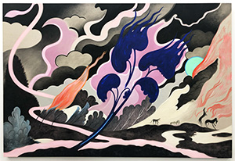
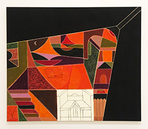
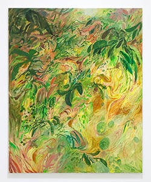
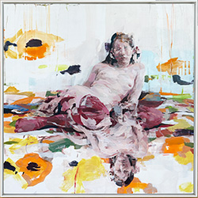

|  |
Review: Koak's Letter to Myself (when the world is on fire) is a Personal TriumphJuxtapoz MagazineShe lays pigment over natural elements, thus creating a palimpsest of color and dynamism over destruction. It is a cacophony of hues both natural and supernatural: a sea foam green sun, a blue Seussian tree dissolving into flames, pinks and magentas abstracting the inky smoke. Koak's foray into the landscape is a potent reminder of the toxic sublime. In the same way a beautiful sunset reminds one of the pollution required to create it, we are sucked in by the burning horizon, staring wide-eyed and numb. |
|  |
Review: Alicia McCarthy, Muzae Sesay, and Martha Shaw at pt.2 GalleryJuxtapoz MagazineThe handmade quality of each piece — evident in Sesay’s swirling, textured hand, in McCarthy’s dripping paint and color swatching, in Shaw’s interpretive rendering and scratching through to the canvas — drives a sense of honesty, of raw expression from each artist. |
|  |
Earthly Pleasures: A Review of Soumya Netrabile’s Searching for StarsSixty Inches from CenterIn reality or in Netrabile’s painted world — it is not all edenic: there are bones and body parts; there are worms wriggling under rocks. But even so, these paintings are marked with an absence of fear. They are infused instead with reverence, a lack of judgment, and an openness to the power and magnitude of the natural world. |
|  |
Lulu with Her Friend, and Vice VersaWoven Tale PressLulu does not react, distracted or wholly at peace, to the discomfort of the body she drapes her arms over. Lulu fades in places, glitching into the colors of her friend. Eclipsed by the clouds and vice versa. The deep red floats up as peaches drop down, impossible to tell if darkness originated, or light. (Read more on pages 20-21) |